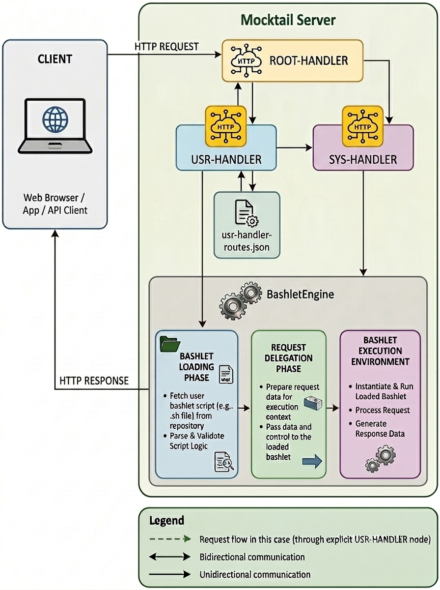

Setup Dynamic Web Hosting on Mocktail Server
Dynamic web hosting is a feature of the Mocktail Server that allows you to host dynamic web applications on the Mocktail Server. This is achieved via the use of Bashlets, which are server-side scripts that handle client web requests and generates dynamic responses. The Mocktail Server provides a Bashlet Container implementation (BashletEngine) which executes Bashlet endpoint functions and return the output as the response to the client's request.
Categories
Introduction to Bashlets
Overview
Bashlets are specialized, server-side, bash scripts that handle inbound client web requests and generate dynamic responses. The Mocktail Server provides a Bashlet Container implementation (BashletEngine) which intercepts inbound requests received from clients,routes them to appropriate handler functions inside a Bashlet and finally returns any user-defined response to the client. Support for common HTTP protocol methods such as GET, POST, PUT, DELETE, OPTIONS is provided as standard. Bashlets provide a solid foundation for the construction of server-side web applications using nothing more than the Bash scripting language you're already familiar with; all the heavy-lifting related to the acceptance, parsing and routing of inbound client requests, the generation & dispatching standards compliant HTTP responses, and management of the server-side application context, is handled by the Mocktail Server and the BashletEngine. This allows you to focus on the business logic of your web application without having to worry about low-level HTTP protocol details and the underlying client-server communication/message exchange process. Bashlets are also a great way to get a dynamic web application up and running quickly, without having to install and configure a full-fledged web server stack and language platform like Java,NodeJS,Go or similar; all thats required in bash which is installed as standard on most Linux distributions and MacOS.The anatomy of an end-to-end Bashlet request
The following diagram illustrates a simplified view of the end-to-end flow of a client request to a Bashlet endpoint including the intermediary components that facilitate the generation and dispatch of standards-compliant HTTP responses to the client.
The process, as depicted in the diagram, may be breifly summarised as follows:
- A client sends a HTTP request to the Mocktail Server.
- All inbound HTTP requests, received to the Mocktail Server are delegated to the Root Handler; this is a special, internal handler that generally does not service client requests directly, it's principal purpose is to parse the raw incoming request data of the wire into an equivalent high-level, request object representation and then to route the request to downstream handlers in the Mocktail Server stack.
- The Root Handler delegates the request to the Usr Handler. By default, all user-defined Bashlets will be associated with the Usr Handler via the depicted usr-handler-routes.json file; this is the simplest way to get started using bashlets. See the next section on Configuring Bashlets for an in-depth guide on how to define a Bashlet route type in the Usr Handler's json-based, routing file. Details on how to define custom handlers if absolutely necessary, are also provided, however this is a more complex procedure.
- Next, where Usr Handler detects that the request is associated with a Bashlet route, it immeidately suspends processing of the request and hands it off to the BashletEngine.
- The BashletEngine then uses the available routing information (Provided by the handler that invoked it) to look up the target Bashlet and initialise it by calling its init() function.
- Next The BashletEngine further parses the request and routes it to the appropriate endpoint function within the now intialised Bashlet, at this point control in passed to the Bashlet.
- The Bashlet endpoint function processes the request, generates a response, and returns it to the BashletEngine.
- Finally the BashletEngine formats the response according to HTTP standards and sends it back to the client